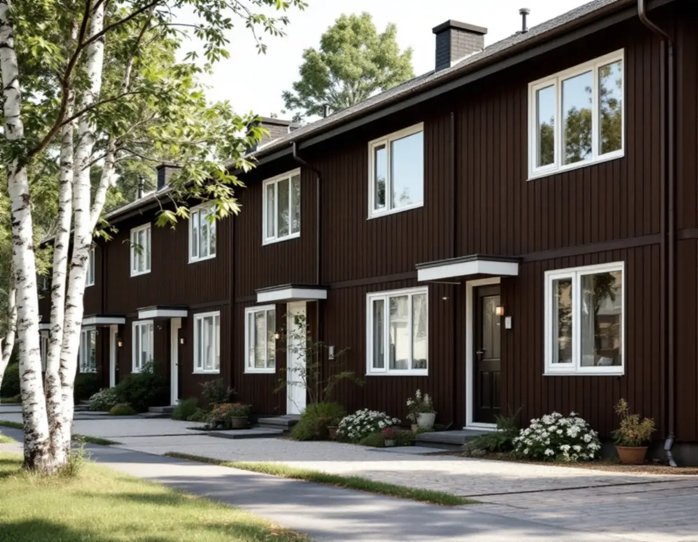
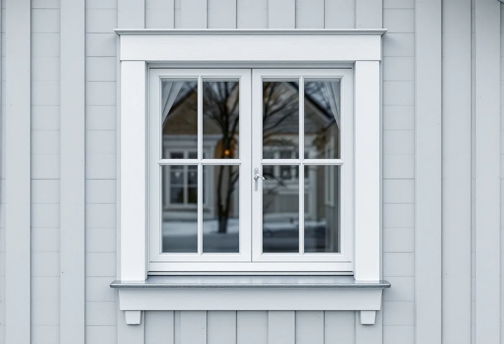
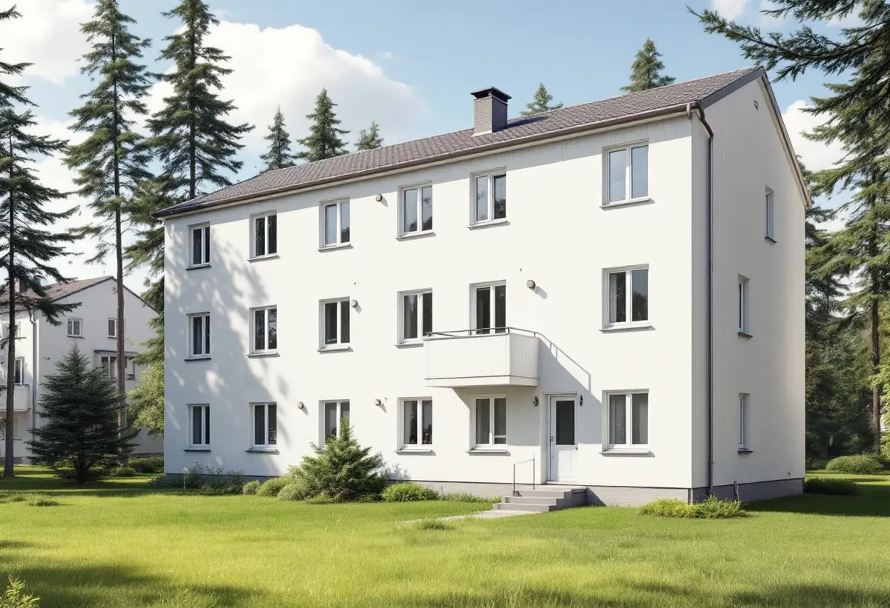

Platsbesök
Gratis besök där vi mäter fönstren.
I Hässelby villastad kräver ett fönsterbyte på en villa i regel inte bygglov, men det betyder inte att vilka fönster som helst passar. Detaljplanen och varsamhetskravet gäller ändå. Geal Entreprenad AB byter fönster på villor, radhus och kedjehus i Hässelby och hjälper dig att välja fönster som passar huset och grannarnas.

Stadens områdesfakta för 2025 räknar 7 029 bostäder i Hässelby villastad, och 4 757 av dem är småhus med äganderätt. Stadens vägledning Varsam utveckling av småhus- och villaområden beskriver hur många villor där på 1960- och 1970-talen ersattes av täta, sammanhållna grupper av enhetlig småhusbebyggelse, och hur hus på tomter kring 600 kvadratmeter har kompletterat den äldre bebyggelsen.
I vägledningens tabell saknar Hässelby villastad markering som kulturhistoriskt värdefull miljö. Hässelby strand och Hässelby gård, som hör till tunnelbanestäderna, är däremot markerade. Stadsmuseets karta visar vad som gäller för det enskilda huset, och staden påpekar att det finns områden som ännu inte är inventerade.

Stockholms stad skriver att det inte längre krävs bygglov för fasadändringar på en- och tvåbostadshus om vissa förutsättningar är uppfyllda. Fasadändringar som inte kräver lov ska ändå stämma med detaljplanen eller vara en liten avvikelse som inte motverkar planens syfte. Boverket påminner om att ändringen ska göras varsamt och anpassas till omgivningen, och att den inte får innebära en betydande olägenhet för grannarna.
Staden skriver också att bygglov kan behövas om huset omfattas av varsamhetsbestämmelser i detaljplanen, även utanför riksintressen och särskilt värdefulla områden. Vi tittar därför på detaljplanen för fastigheten i stadens e-tjänst innan vi beställer fönster, så att du inte bygger fel utan att veta om det.
Boverket redovisar två domar från Mark- och miljööverdomstolen om fönsterbyten i 1920-talsklassicerande flerbostadshus, där den ena är vägledande som MÖD 2019:25. Trä hade ersatts av aluminiumklätt trä, profilerna var kantigare och fast spröjs hade ersatts av löstagbar. Domstolen ansåg att skillnaderna var tydliga för en fackman på nära håll men knappt märkbara för den som färdas på gatan, och att bytet därför inte krävde bygglov.
Boverket understryker att domarna bara säger att fönsterbytena inte krävde lov i just de fallen, inte att det gäller alla fönsterbyten. För en bostadsrättsförening i Hässelby strand eller Hässelby gård, där husen ligger i kulturhistoriskt värdefulla miljöer, är det därför klokt att ta fram ett underlag och fråga staden innan man beställer.
Vägledningen råder att förändringar i sammanhållna grupper av villor, radhus och kedjehus utformas utifrån ett helhetsperspektiv. I ett grupphusområde från 1960-talet är det fönstren som mest syns när husen jämförs med varandra, så ett byte som ser annorlunda ut än grannarnas märks. Vägledningen nämner också att eternit, som innehöll asbest, var ett populärt fasadmaterial i Hässelby och i många fall har bytts ut. Byts fasadskivorna samtidigt som fönstren bör båda planeras ihop.
Vi föreslår fönster med samma indelning, kulör och proportioner som de ursprungliga, och tar gärna fram ett gemensamt förslag om flera grannar vill byta samtidigt. Ska fasaden också åtgärdas finns mer under fasadrenovering i Hässelby.

Gratis besök där vi mäter fönstren.
Detaljplanen och Stadsmuseets klassning kontrolleras.
Fönster som passar huset och gruppen.
Tillverkning efter uppmätta mått.
Byte, drevning, tätning, foder och bleck.
Vi går igenom fönstren och skötseln med dig.
I ett småhus räknar Skatteverket det som rotarbete att reparera eller byta ut fönster, att montera bullerglas och isolerglas och att byta fönsterbleck. Är bostaden yngre än fem år får arbetet bara återställa det ursprungliga skicket, och nytt material ska vara likvärdigt med det gamla.
Avdraget är högst 30 procent av arbetskostnaden och högst 50 000 kronor per person och år. Material och resor ger inget avdrag, och Geal drar avdraget direkt på fakturan.
Antal och storlek på fönstren, indelning och glas, foder och bleck, om fönstren beställs för flera hus samtidigt och om underlag till staden behövs. Efter ett gratis platsbesök får du ett skriftligt kostnadsförslag.
Byta eller renovera fönster.
Fönsterbyte i Stockholm →Takbyte, takbesiktning och plåtarbeten.
Takläggare i Hässelby →Villastaden, Hässelby strand och gård.
Takrenovering i Hässelby →Styckade tomter, gränser och kartan.
Attefallshus i Hässelby →Källarbadrum, backventil och bostadsrätt.
Badrumsrenovering i Hässelby →Riva, bygga nytt och delad tomt.
Byggföretag i Hässelby →Villastaden och radhusen.
Fasadmålning i Hässelby →Villastad, sommarstugor och grupphus.
Fasadrenovering i Hässelby →Radhusen i Hässelby gård.
Fönsterrenovering i Hässelby →Slipa trägolvet – eller lägga nytt.
Golvläggare i Hässelby →Golvet under mattan.
Golvslipning i Hässelby →Villastad, grupphus och radhus i Hässelby.
Målare i Hässelby →Plåttak efter eternit, rännor och beslag i Hässelby.
Plåtslagare i Hässelby →Altan, bod och plank i villastaden och radhusen.
Snickare i Hässelby →Eternit och asbest på taket.
Takbyte i Hässelby →Ny tapet i grupphus och villor.
Tapetsering i Hässelby →Hus som vuxit i omgångar.
Tillbyggnad i Hässelby →Grupphusen, eterniten och ventilationen.
Totalrenovering i Hässelby →